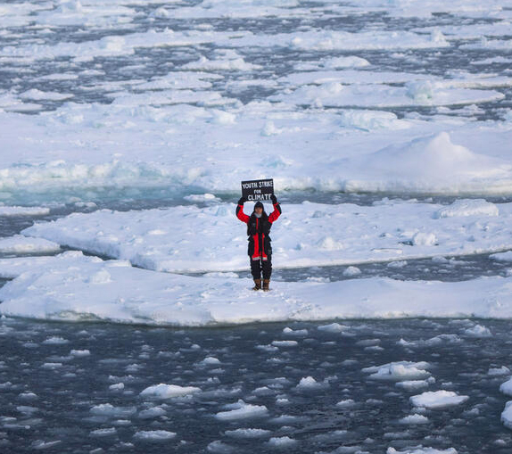
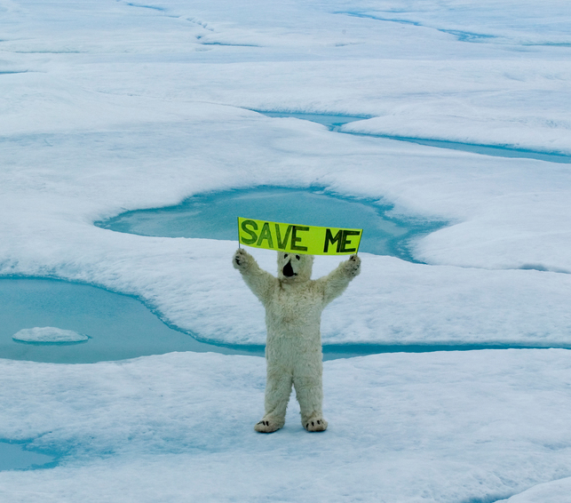
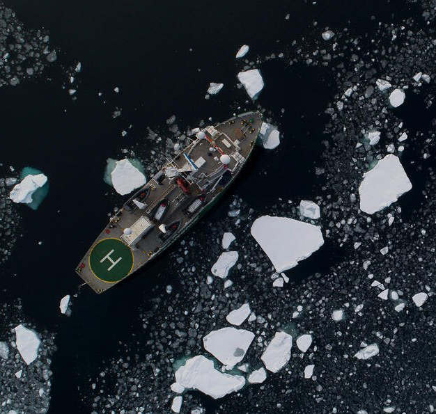

專案里程碑
-

已於2015年1月完成
透過《臺灣資通訊產業使用再生能源現況》，揭露資通訊產業增加再生能源使用情況，進一步推動企業投入再生能源發展。
已於2015年3月完成
許多輿論認為臺灣的空污多來自境外，我們透過《燃煤之疾-PM2.5 報告》，揭露臺灣70%的PM2.5是境內生成，進一步促使臺灣民眾反思如何減少境內生成的空氣污染。
-

已於2017年11月完成
發表《全球及臺灣燃煤發電不可不知的真相》報告，揭露燃煤發電導致空污染與全球暖化，推動臺灣拋棄骯髒的化石燃料，進一步朝向永續的能源發展。
已於2018年11月完成
邀請國際空污專家來台，公布研究數據，指出興建深澳燃煤電廠將導致嚴重空氣污染。
-

已於2019年3月完成
為推動停建深澳電廠，我們積極與多位臺灣學者共同合作，透過《深澳電廠健康風險》研究報告，揭露深澳電廠產生的巨大健康風險，進一步形塑社會輿論。
已於2019年12月完成
透過相關數據與調查，發布《臺灣電子製造業綠能使用評比》，推動臺灣電子業進一步增加綠色建置比例。